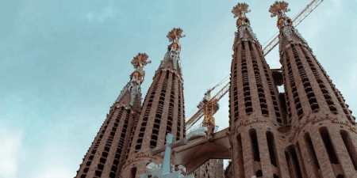

Gaudi

La Sagrada Família, conçue par Antoni Gaudí à Barcelone en 1882, est une cathédrale inachevée, mais emblématique du modernisme catalan. Commencée comme un projet néo-gothique, Gaudí a pris en charge sa conception en 1883, y intégrant son style unique. Les façades détaillées représentent des scènes bibliques, tandis que l'intérieur éblouit par ses colonnes arborescentes et ses voûtes inspirées de la nature. Les tours élancées s'élèvent vers le ciel, ornées de détails symboliques. Bien que toujours en construction, la Sagrada Família demeure un chef-d'œuvre architectural, reflétant la vision novatrice de Gaudí et son dévouement envers l'art sacré.
